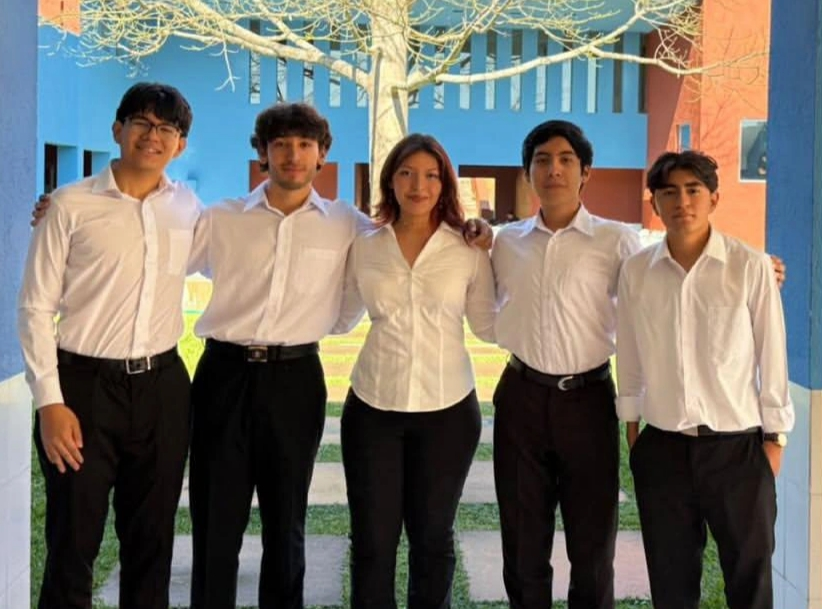
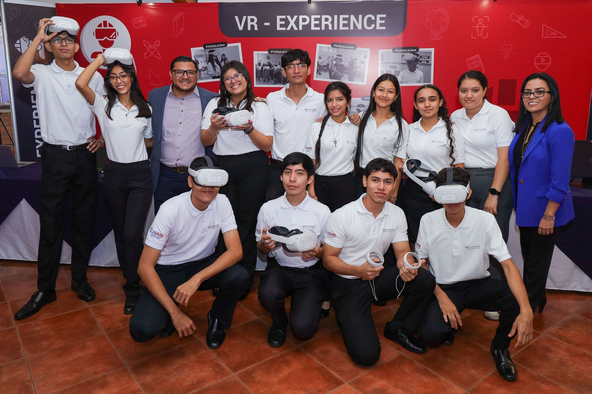
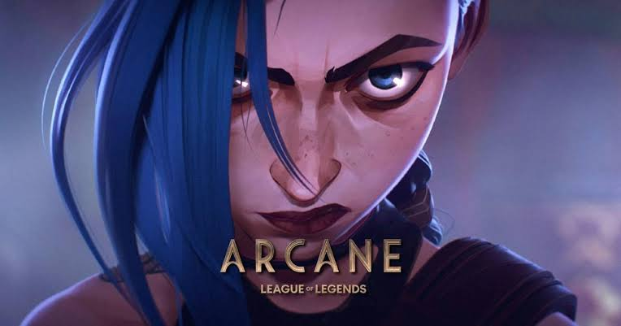
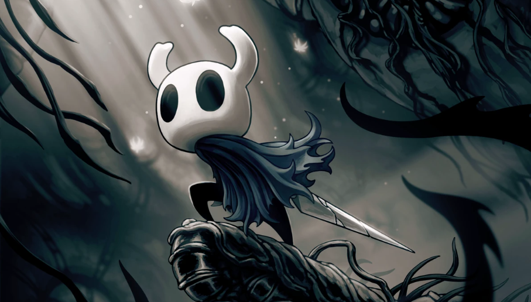

Acerca de mí
Hola, mi nombre es Gerardo. Me gradué del Colegio Citalá y del Programa Oportunidades de la Fundación Gloria Kriete (Promoción 2024). En la actualidad, estudio con beca en la Escuela Superior de Economía y Negocios (ESEN).
Siempre me ha fascinado el potencial de la tecnología para transformar ideas en realidades, lo que me llevó a interesarme por el desarrollo de software. A mis 19 años, valoro profundamente el apoyo de mi familia y amigos en mi vida. Estoy muy motivado por seguir aprendiendo, explotar mi potencial y cumplir mis metas profesionales.
Proyectos Destacados
API REST para Servicios de Prótesis
Desarrollo backend en Python utilizando Flask y SQLite, validando endpoints con Postman para la materia de Desarrollo de Aplicaciones Informáticas.

Eurochocos Library
Aplicación orientada a objetos en Java aplicando principios de arquitectura en capas para gestionar un catálogo de biblioteca, desarrollada para la materia de Programación Orientada a Objetos.
Keys
Presentación de un proyecto en Oculus sobre un juego de realidad virtual para la Feria de Logros de la Sede de San Salvador 2024.

Actividades y Voluntariados
MUN - ESEN
Apoyo en la Secretaría General MUN ESEN 2026
Proceso de selección - Oportunidades
Apoyo en la gestión de solicitudes, ingreso al sistema y seguimiento de candidatos.
Más allá de la pantalla
En general, estos son mis pasatiempos favoritos:
Deportes
Me gusta jugar básquetbol y fútbol con mis amigos.
Música
Escuchar música variada, en especial indie en inglés.

Serie
Una de mis series favoritas es Arcane, por su historia y personajes.

Videojuego
Mi videojuego favorito es Hollow Knight.